o skate foi criado na década de 1960 na Califórnia, por surfistas que não aguentavam esperar pela época das boas ondas. Eles montaram um equipamento bastante peculiar. Dispondo de algumas rodas de patins, os atletas fixaram-as em um deck de madeira que muito assemelhava-se a uma prancha surfista em menores proporções.

Em 1963 o esporte ficou mundialmente conhecido como o SKATEBOARD, e com essa popularidade mundial, as primeiras manobras começaram a ser inventadas. Um tempo depois, tivemos a oficialização do SKATE como um esporte.

Por conta dessa febre, milhões de exemplares foram comercializados entre os anos de 1963 e 1969. Inclusive, o campeão do primeiro campeonato de skate foi Larry Stevenson, que também é o fundador da marca pioneira em produção de skates em formato de prancha, a Makaha.
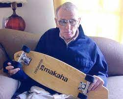Foi no começo dos anos 70, que a Califórnia passou por um longo período de seca que acabou levando o esvaziamento de muitas piscinas públicas e particulares. Com a inativação dessas piscinas os surfistas/skatistas passaram a notar a possibilidade de praticar skate.
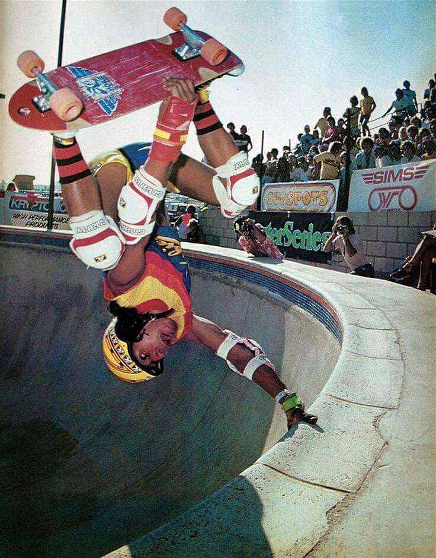As halfPipes, como ficaram conhecidas essas piscinas, possuiam paredes quem remetiam as ondas do mar,que aumentavam mais ainda a relevância do universo surfista no mundo do skate Simultaneamente, as partes do setup estavam passando por uma grande fase revolucionária, marcada pela criação das rodas de uretano, material extremamente resistente, mas, sobretudo, macio.
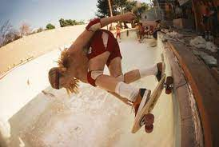Em 1975, as tricks passaram a ser aperfeiçoadas ainda mais, principalmente com a entrada do grupo de skatistas Z-Boys, renomado por lançar as manobras do surf sobre o deck. Mas, as manobras tipicamente consagradas como as mais básicas essenciais do skateboarding só começaram a despontar em 1979 com Alan Gelfand, lançando o Ollie.
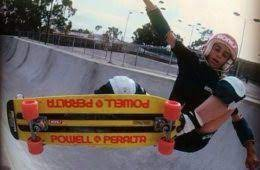Mas foi na década de 90 que que o esporte ganhou o mundo com o lendário Tony Hawk, ele realizou uma revolução no cenário do skate, com suas manobras aéreas e Flips. Ele ainda é considerado até hoje, o maior skatista de todos os tempos.
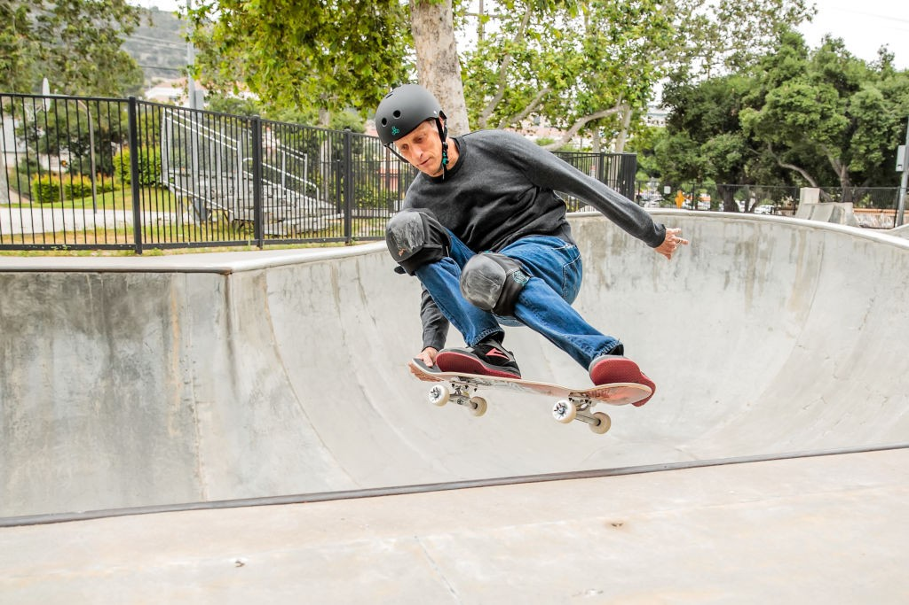Foi nessa década também que o skate começou a tomar o rumo do profissionalismo, os equipamentos melhores e mais leves davam suporte a um Skate mais técnico com manobras grandes e poderosas, em 1995 a ESPN criou os X-Games e começou a limpar a imagem do skate como esporte rebelde.
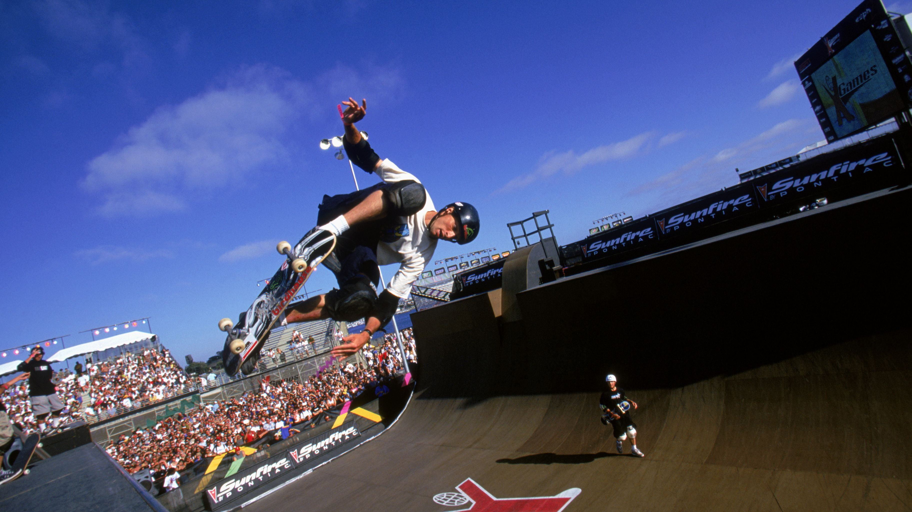Com a virada do século, o esporte fica cada vez mais profissional e estrututado. Grandes eventos e competições pelos Estados Unidos como o próprio X-games, Dew tour, Gravity games, Tony Hawk Gigantesc Tour, Maloof Money Cup com transmissão ao vivo pelas principais redes de TV do mundo e premiações milionárias.
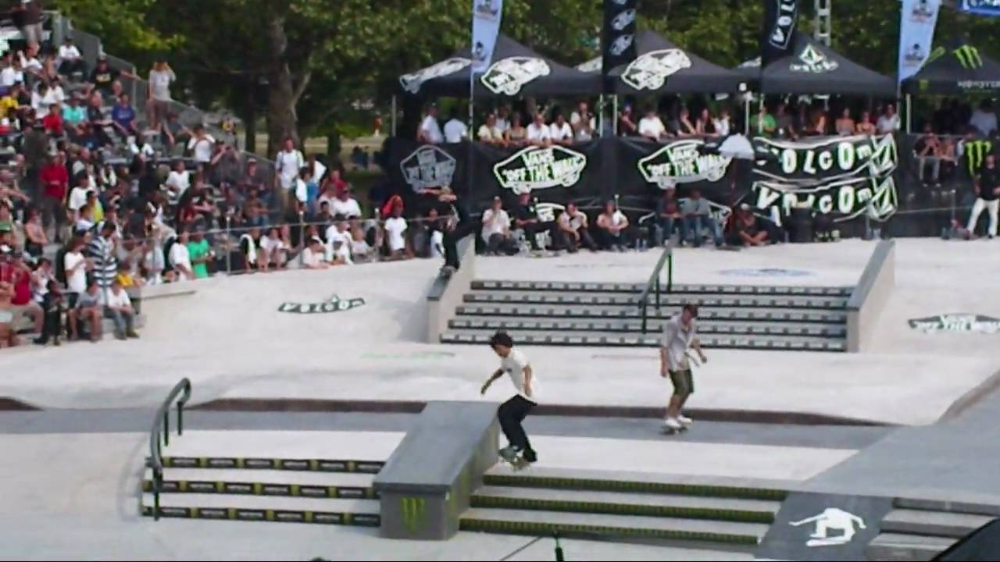Em 2002 Danny Way inventa a Mega Rampa durante um programa ‘pay per view’ de TV nos Estados Unidos, levando o Skate Vertical para patamares nunca antes vistos. O entretenimento relacionado ao skate e aos skatistas também creceu muito, se espandindo para outras áreas, como Omar Hassan que fez publicidade com a Ford e Bob Burnquist para Toyota.
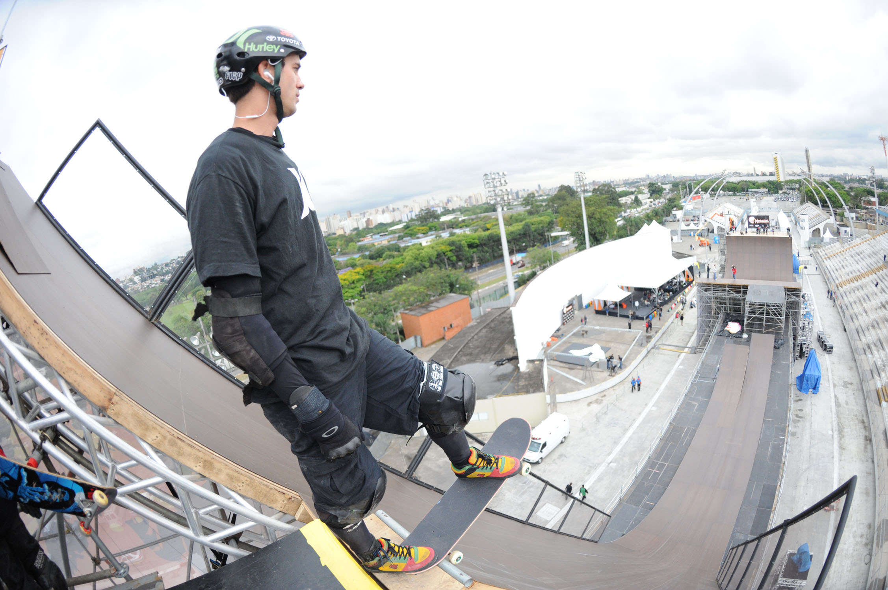Em 2004 na cidade de Dortmund, Alemanha, durante o Munster Monster Championships, é fundada a Internation Skateboarding Federation (ISF), sendo a CBSk uma das fundadoras.É criado o Go Skateboarding Day em 2004 pela International Association of Skateboard Companies (IASC), uma data para comemorar o Dia Mundial do Skate praticando e confraternizando.
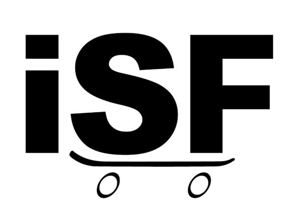Na década seguinte, já estava bem solidificado e popularizado como nunca, o esporte que, antes era associado á rebeldia, agora estava sendo muito divulgado e transmitido na TV, seja transmissão de campeonatos ou por propagandas de muitas empresas fora do Mercado, melhor aceito pela sociedade, tendo suas demandas atendidas pelo poder público através de construção de skate parks e criação de uma política pública própria.
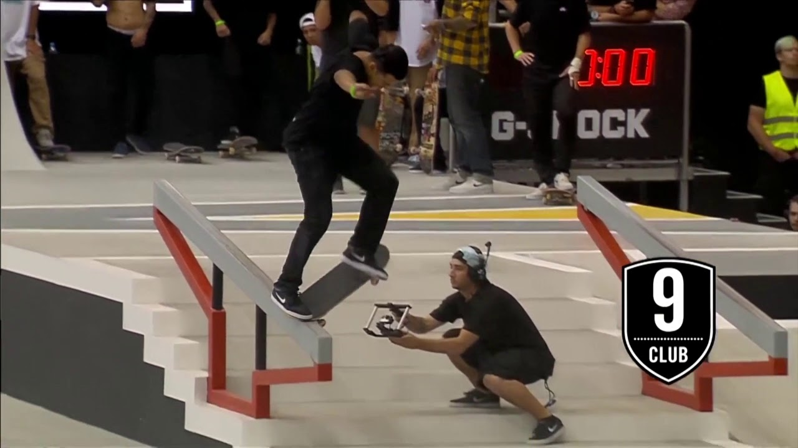Em 2010 é criado pelo skatista profissional Rob Dyrdek o Street League Skateboarding, uma competição internacional somente para convidados com premiações milionárias e transmissão ao vivo pela TV e internet.
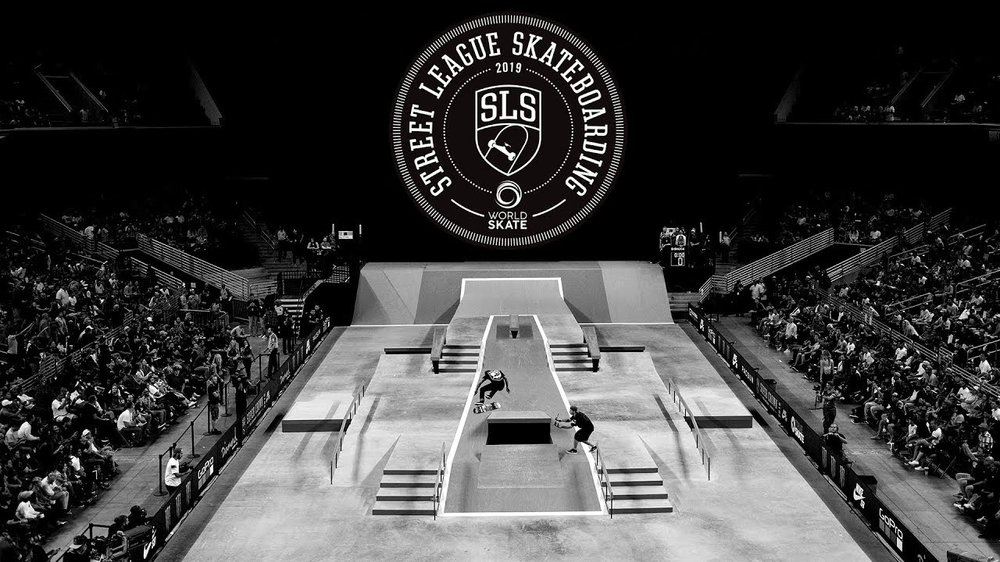Letícia Bufoni, Kelvin Hoefler e Pamela Rosa são os brasileiros que podem se orgulhar de terem no currículo um título mundial da Street League Skateboarding (SLS).
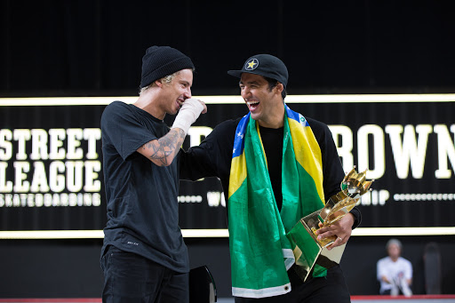